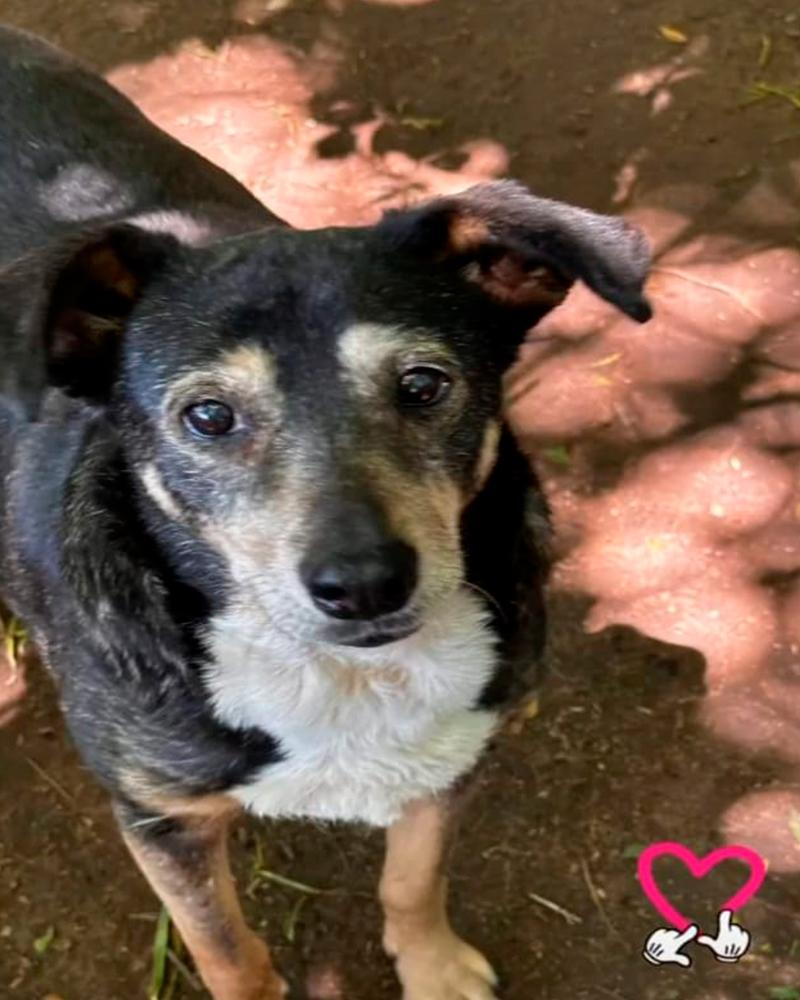
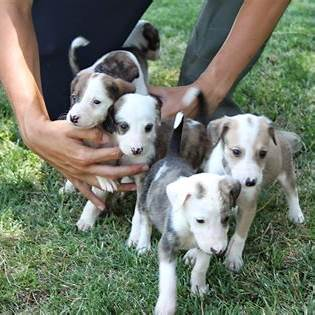
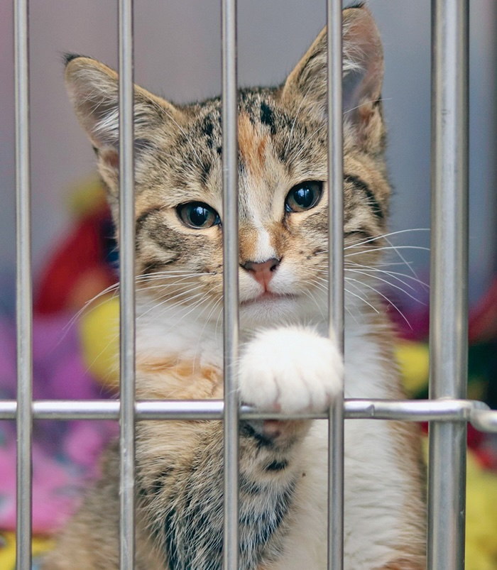
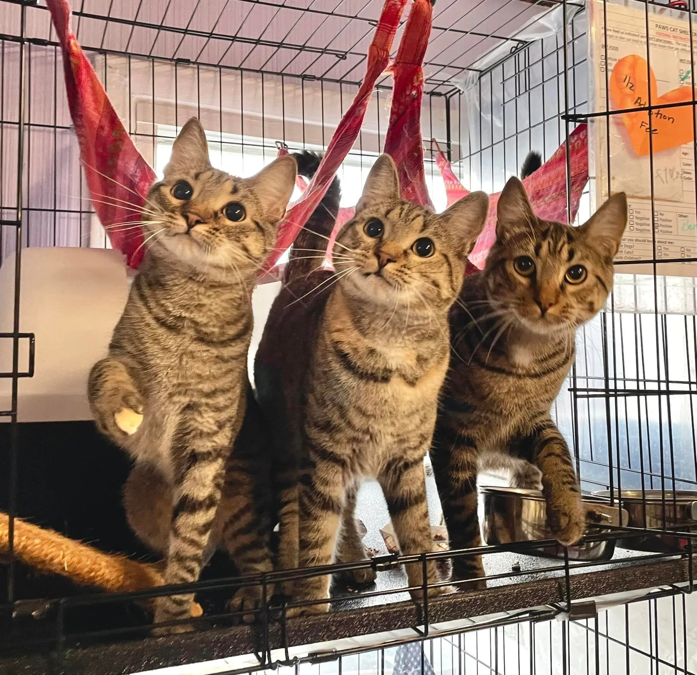
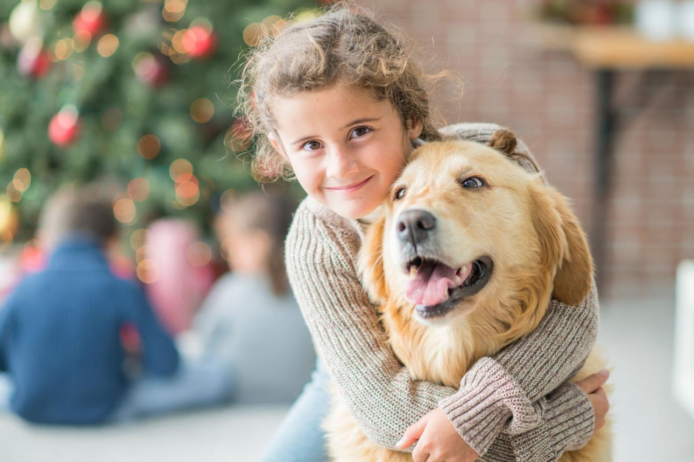

1
Elegí un perro o gato que quieras conocer.
Cada perro y gato merece una familia que le brinde amor, cuidado y una segunda oportunidad.
Elegí un perro o gato que quieras conocer.
Completá el formulario con tus datos.
Nos contactamos para coordinar la entrevista.

2 años • Muy juguetón
Quiero adoptarlo
recién nacidos • Muy juguetones
Quiero adoptarlos
1 año • Cariñoso y tranquilo
Quiero adoptarlo
1 año • Cariñosos y tranquilos
Quiero adoptarlos